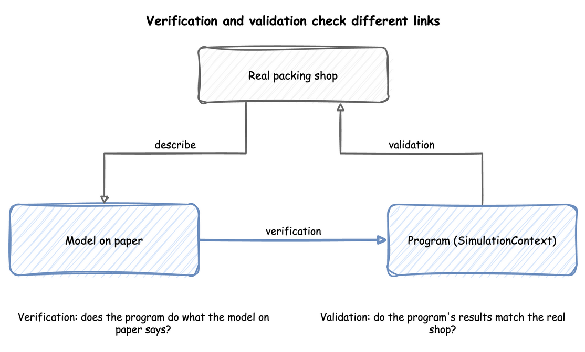

Checking and Validating
A model that runs is not a model that is right. This page explains how to check a model in two ways that need different evidence: verification asks whether the program does what the model on paper says, and validation asks whether that model is a good enough picture of the real system for the question. Both are done on the way through a simulation study, and neither is finished by one test. Checking a Model applies every check on this page to the shop. The page's own one-packer cases come from checking_and_validating.py, which asserts each number.
What You Will Learn
- the difference between verification and validation;
- how to read a trace and work a case by hand;
- which statistics must agree with each other, and which formulas a run must match;
- how to compare a model with the real system, and what to do when they disagree;
- how sensitivity analysis shows whether an estimate is good enough.
Verification and Validation
In the Tutorial
The model on paper says the shop's arrivals, packing times and number of packers. The program is the SimulationContext, the blueprint or the low-level code that runs them. The real shop is the packing area with its own records. Verification compares the program with the model on paper. Validation compares the program's results with the real shop.

Why It Matters
Banks et al., as the lecture notes give it, put the difference briefly: verification is building the model correctly, and validation is building the correct model. A model can pass one and fail the other. A program can follow the model on paper exactly, while the model leaves out the thing that makes the real shop slow. A model can also describe the shop well and have a fault in its code.
How to Use It
Name each check by what it compares. The trace, a case worked by hand, the statistics against each other and a formula are verification. A comparison with the real shop and sensitivity analysis are validation. Law adds credibility: a model is credible when the people who will use its results accept them, and walking them through the assumptions earns it.
What the Result Means
Checking a Model passes every verification check and finds one disagreement with the shop's observed values. Verification alone would have called the model ready. The study must explain the disagreement before it trusts the model for the decision.
Read the Trace
In the Tutorial
The records of a desflow run are a trace: the record of each event in time order. In First Simulation, order 2 arrives at 2.696 seconds and joins the queue, and starts at 4.052 seconds, the instant order 1 is packed.
Why It Matters
The lecture notes on Banks et al. list three ways to find errors in a program: a trace, a look at whether the output is reasonable under a variety of input settings, and a check of the model by someone else. The trace is the cheapest of the three.
How to Use It
Run a few orders and follow one by hand. It should arrive, wait while every packer is busy, start when a packer is free, and finish after its packing time. Streaming Out shows how to pick one order's records out of a long run.
What the Result Means
An order that starts while every packer is busy, or finishes before its packing time, is a fault in the program. A trace that follows the rules shows only that the cases in it are right, so the next checks test the rest.
Work a Case by Hand
In the Tutorial
Checking a Model runs three packers for 10 seconds, with an order every second and 4 seconds to pack each. Worked by hand, 4 orders finish, 5 are still in the shop, the mean wait is 5 ÷ 7 = 0.714 seconds, the packers are busy 80% of the time and the queue averages 0.8 orders. The run reports the same numbers.
Why It Matters
Constant gaps and constant packing times make every number exact, so a difference is a fault, not chance. Cases at the extremes test the logic further: with demand above capacity, the queue must grow for as long as the run lasts, and a model that cannot show this has a fault.
How to Use It
Replace every random input with a constant, run for a short time, and compare each statistic with the answer worked on paper:
| docs/snippets/yaml/checking_a_model.yaml:fixed | |
|---|---|
desflow run checking_a_model.yaml prints the 20 records of the run, which are its trace, then the statistics at 10 seconds.
Then run the extremes, where the answer is known without the model. Four cases with one packer and 1.5 seconds of packing, over an hour:
- One order every 3 seconds: orders arrive at 3, 6 and on to 3,597 seconds, so 1,199 arrive. Each is packed before the next arrives, so none waits, and the packer works 1,199 × 1.5 seconds of the 3,600, which is 49.96%.
- One order every second: the packer needs 1.5 seconds for each, so it never keeps up. 3,599 orders arrive, 2,399 finish, and 1,200 are in the shop at the end.
- One order every 10,000 seconds: no order arrives in the hour, so none starts and none finishes.
- One order a second with 100 packers: a packer is always free, so no order waits.
What the Result Means
A run that matches every case worked by hand has the logic of the model on paper. Checking a Model also runs the busy hour at its extremes over 20 replications: one packer finishes 2,318 orders on average against the most possible, 2,320, and ten packers are busy 27.08% of the time against 27% by hand. A difference in any of these cases must be found before any experiment.
Check the Statistics Against Each Other
In the Tutorial
Measuring a Run reports the queue length, the arrival count and the mean wait of the busy hour separately. By Little's law they must agree: 2.406 orders in the queue on average, against 1.736 orders a second × 1.3817 seconds = 2.399.
Why It Matters
Some relations hold for every model that settles, so they test the statistics without any hand calculation. A run measures each statistic separately, so if they disagree, one of them is wrong.
How to Use It
Compare the average queue with the arrival rate times the mean wait, as Queueing Basics shows in each form of the model. Check that the counts in Statistics add up: when no order balks or reneges, the orders started over the whole run are those finished plus those still in the shop. In Measuring a Run, 6,261 started, 6,250 finished and 11 are still in the shop.
What the Result Means
Agreement shows the statistics are consistent with each other. It does not show the model is right for the shop: a model with the wrong packing times would agree just as well. Little's law is also weaker for a queue that never settles. Checking a Model finds it roughly holds with one packer, but that queue's mean depends on how long the run lasts.
Check Against a Formula
In the Tutorial
Checking a Model runs desflow explain --verify on the busy hour of Trusting Results, ten times. The utilisation of 0.9 and the throughput of 1.8 orders a second agree with the runs: 0.9034 and 1.807. The wait has no formula for three packers with measured packing times, so it is not compared.
Why It Matters
For a simple case there is a formula. One packer with exponential gaps and service times at utilisation 0.75 has a mean wait of 4.5 seconds when the service time averages 1.5 seconds. A run of the model, repeated with several seeds, must produce an interval that contains it. A formula tests the part of the model it covers. It cannot test priorities, breakdowns or changing demand, which is why those are the parts to check by hand and against the real shop.
How to Use It
desflow explain applies the formulas to a model without running it. It gives each resource's utilisation, and the mean wait where a formula applies. desflow explain --verify then runs the model and compares what the runs measure with those values. Where the formulas do not hold, it gives no value, makes no comparison and says why. Queueing Basics shows the command in each form, and Check Against Theory states the rule and how to read a difference.
What the Result Means
This is verification, not validation. It checks that the program agrees with the queueing formulas, and that the model's rates, units and service times are consistent with each other. It does not show that the model is close enough to the real shop.
Compare With the Real Shop
In the Tutorial
Checking a Model compares the model with values observed in the shop over 58 minutes of a busy hour: a mean wait of 2.6 seconds and a utilisation of 91%. The values are illustrative. The wait lies inside the model's 95% interval over 20 replications, 2.16 to 2.80 seconds. The utilisation lies outside its interval, 89.70% to 90.96%.
Why It Matters
Validation needs evidence from the real system. Law suggests comparing the model's results with the existing system's where there is one, along with a walk-through of the assumptions by the people who know the system, and sensitivity analysis. The lecture notes on Banks et al. describe calibration as a loop: compare the model with the real system, adjust it, compare again. They also give three steps:
- Build a model with high face validity: one that looks right to the people who know the system.
- Validate the model's assumptions.
- Compare input-output behaviour with the real system's data.
How to Use It
Give the model the inputs of a real period and compare its measures with what happened. An experiment places each observed value beside the model's interval, as Experiment Results describes. Check the inputs as well as the outputs: Choosing Inputs and Fitting the Inputs cover the inputs, and Local Replay runs a model on the arrivals of a real trace.
What the Result Means
The results need to agree closely enough for the decision, not exactly. A value outside its interval is a disagreement that the study must explain before it trusts the model. The interval covers only the model's spread from run to run, not the error in the shop's own measurement. When the real system does not exist yet, as for a proposed design, there is nothing to compare with, and validity rests on the assumptions and on sensitivity analysis.
Test the Sensitivity
In the Tutorial
Parameter Sweeps changes the shop's arrival rate around its estimate of 1.8 orders a second. With three packers, a rate 6% above the estimate more than doubles the mean wait, from 2.48 to 5.55 seconds, each the mean of 20 replications after a 2-minute warm-up. With four packers, the mean wait is at most 0.35 seconds at every rate in the sweep.
Why It Matters
A model has inputs that are estimates. Sensitivity analysis changes them and sees whether the answer changes. It shows which estimates the decision depends on, and so which ones need more data.
How to Use It
Sweep each uncertain input over the range it could take, and run every design at each value with the same seeds. desflow experiment runs a sweep from one file, as Parameter Sweeps shows.
What the Result Means
If a 6% change in the arrival rate changes the decision, the estimate needs more work. If the decision stays the same, the estimate is good enough. For the shop the choice of four packers holds for any demand in the range, while the three-packer wait cannot be predicted well without a better estimate of the rate.
Key Takeaways
- Verification checks that the program does what the model on paper says. Validation checks that the model is close enough to the real system for the decision.
- Check as you build: after each part is added, run a case with a known answer.
- Before the experiments, check the statistics against each other and against a formula where one exists.
- Before the results are used, compare with the real system, or say that no comparison was possible.
- Write the checks as tests, as Checking a Model does, so they run again after every change. Readiness and Reporting lists what a model needs before its results are trusted, and Common Mistakes lists the errors these checks find.
Sources
- Banks et al., Discrete-Event System Simulation, chapter 10, read through lecture notes on it: verification and validation, the trace, the reasonableness checks, review by someone else, calibration and the three-step approach.
- Law, "How to Conduct a Successful Simulation Study" (Winter Simulation Conference, 2003), read through the paper: credibility and the comparison with the existing system.
- The checks with Little's law, with a formula and with fixed gaps, the extreme-condition tests, the explanations and the shop examples are our own.